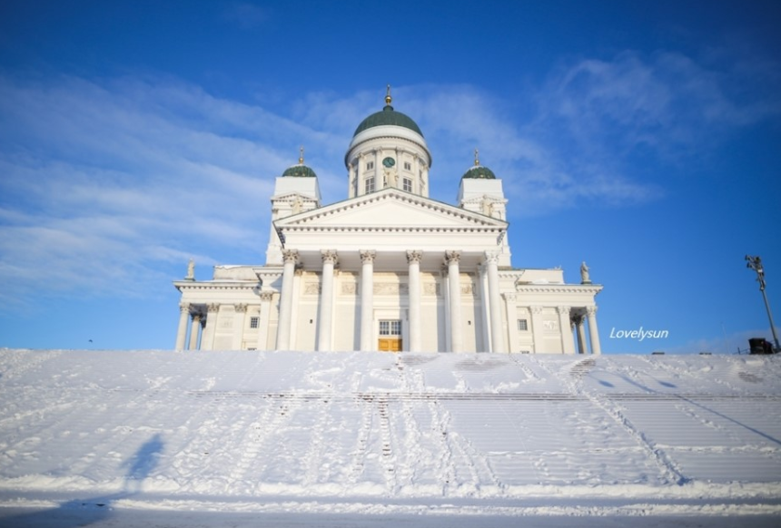
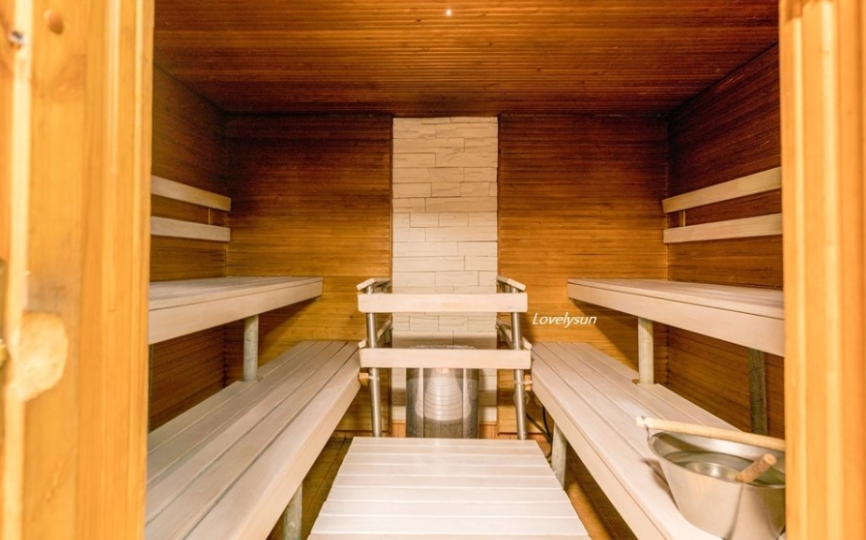
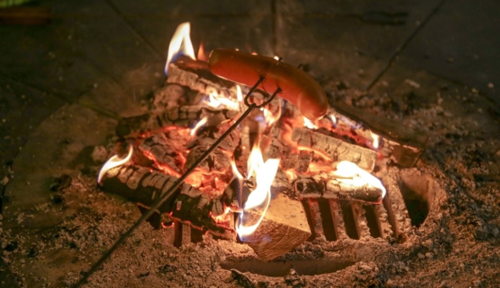

1. Europe
진정한 겨울왕국, 핀란드
▶ 여행시기: 6월 ~ 8월▶ 추천 장소
|  | 핀란드는 북유럽에 위치한 다른 나라들과 마찬가지로 겨울이 매우 혹독한 편이다. 한국에 비해 기온이 훨씬 낮으며 체감온도가 영하 10~20도에 이르는 날들도 많아 여행을 떠날 땐 방한용품을 꼼꼼하게 준비할 필요가 있다. |
| 게다가 겨울철엔 해가 매우 짧기 때문에 오후 3시만 좀 넘으면 거리에 조명이 켜지고 야경이 펼쳐진다. 밤이 길지만 로맨틱한 헬싱키는 스톡만 백화점이 있는 쇼핑거리를 따라 걷다보면 매일매일이 크리스마스 같은 기분이 들곤 한다. 또한, 워낙 눈이 많이 내리기 때문에 스키나 스노보드를 즐기는 건 당연하고, 스누슈잉이나 크로스컨트리 스키를 일상으로 즐기곤 한다. 동네에 크고 작은 숲들이 많아서 굳이 멀리 가지 않아도 겨울 레포츠를 즐길 수 있다. | |
|  | 또한, 핀란드하면 떠오르는 것 중 하나가 바로 '사우나'입니다. 사우나란 단어도 핀란드어라고 한다. 핀란드에서 사우나는 단순히 목욕을 하고 땀을 빼는 것이 아니라 가족, 친구들과 함께 시간을 보내며 소통을 하는 삶의 일부라고 할 수 있다. 사우나가 일상인 핀란드에선 아파트, 개인 주택, 별장에도 사우나실이 필수이다. 일반적인 사우나의 경우 남녀가 분리되어 있으며, 우리나라와 마찬가지로 옷은 다 벗고 이용한다. 남녀 공용으로 사용 가능한 프라이빗 사우나에선 보통 수영복을 입는다. |
|  | 땀을 쫙 빼고 소시지나 핀란드 전통 빵에 시원한 맥주를 마시는 행복도 느낄 수 있다. |